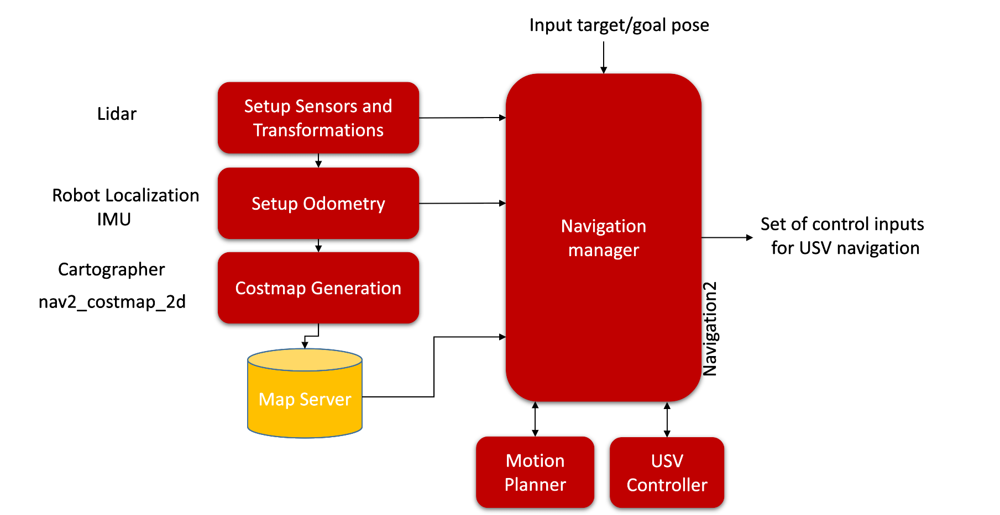

USV Navigation Framework
Below is the framework for USV navigation. The description of each module is provided in the table below.
Modules |
Description |
|---|---|
Setup Sensors and Transformation |
Setup sensors and necessary transformation such as map, odom,
robot_base to sensor etc.
|
Setup Odometry |
Odometry will initially set using IMU sensor, at later stage sensory
fusion techniques could be introduce for batter localization.
|
Costmap Generation |
A cost map will be create using Cartographer. It will be used
determine the free space and occupied area of the workspace.
|
Map Server |
It will contains the generated maps for different environment
|
Navigation manager |
Navigation manager will serve as manager node to handle the entire
communication. It will trigger the navigation process based on the
provided target location from the UAV. This module will also set the
query for the motion planner to compute the collision free path, that
path will be forwarded to the usv controller that will compute the
desired control inputs to follow the path.
|
Motion planner |
Motion planner will provide the collision free path from given start
to the goal state. Navigation2 package provides the generic implementation
of some algorithms such as A*.
|
USV Controller |
This module will contains the appropriate the controller that will
compute the control inputs for thrusters to follow the path computed
by the motion planner.
|